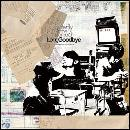

-
Topics
-
出演アーティスト決定！
下北沢を中心に活動するスリーピースバンド、butterfly inthe stomach。
今夏、初のシングルとなる「Photographer」を引き連れて、紅華祭「The Premium Live 2008」に登場！TOWER RECORD×butterfly inthe stomachのコラボレート企画や自主企画「ANDBAND vol.3」など今後の活躍に目が離せない！ -
About
-
Date：2008.10.12.(sun.)
Place：東京工科大学・日本工学院八王子専門学校 学園内 野外ステージ
Time：17:30〜18:30
Entrance Free Event (入場無料！)【NEW!!】ライブ終了後、アーティストによる豪華商品抽選会アリ！The Premium Live 2008
イベントプロデュース集団Advanced Creatorsがお贈りする、東京工科大学・日本工学院八王子専門学校学園祭 紅華祭 １日目のエンディングに最も相応しい、激熱ライブ“The Premium Live 2008”
紅華祭メインステージ史上かつてない、勢いとパワーあふれるパフォーマンスで皆さんを魅了します。大学の学園祭という枠を超えた感動の空間をどうぞお楽しみください！
What's Advanced Creators?
私たちイベントプロデュース集団Advanced Creators（アドバンスドクリエイターズ）は、普段学内・学外を問わず、屋内・外のイベント会場等において音響・照明・イベント企画を行っている東京工科大学の公認サークルです。
-
Artist
-
http://www.butterflyinthestomach.com/
（左から）小澤秀明(b),小野雄一郎(vo,g):渡辺裕次(dr)小野雄一郎(vo,g)、小澤秀明(b) 、渡辺裕次(dr)から成る3ピースバンド。
繊細な心理描写と情景描写の表現が持ち味の歌詞。
そして、キャッチでノスタルジックなメロディーは、誰もが経験したことのある
“あの切ない感じ”を思い起こさせる。
下北沢を中心に精力的にライブ展開をしており、
そのステージは静と動を織り交ぜた心身揺さぶるサウンドで、
見る者全てにエクスタシーを感じさせるほどまでの刺激的なライブを繰り広げる。
その独特の世界観、耳に残るメロディーに引き込まれること間違いなしである。 -
- Live Schedule -
10/18(sat)
下北沢GARAGE "butterfly inthe stomach presents ANDBAND vol.3"
10/30(fri)〜11/3(mon)
大阪 パナソニック乾電池 EVOLTA presents「MINAMI WHEEL 2008」
-
Access
-
各種交通機関をご利用の方へ

最寄り駅：JR横浜線 八王子みなみ野駅
八王子みなみ野駅からスクールバス５分（無料）
 携帯用交通案内です。
携帯用交通案内です。
http://kam.teu.ac.jp/teu/264/xs=_gk0.kh4sl1dP/ -
Information
- Index
- Links
- DISCOGRAPHY
- 「Photographer」

- 「Girls Pool」
- 「LongGoodbye」
- 